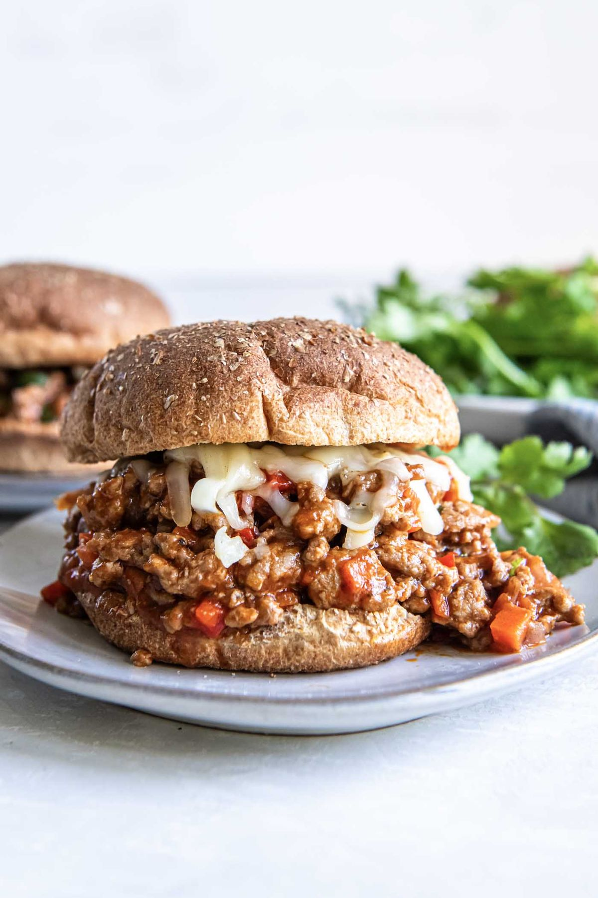

Turkey Sloppy Joes

- Meal
- Dinner
- Serves
- 6
- Protein
- turkey
- Cook
- stovetop · 15 min active / 30 min total · easy
- Make-ahead / leftovers
- yes / yes
- Mediterranean
- yes
- WW tier
- moderate
- Status
- Trying out (probation)
Kristine's BBQ turkey sloppy joes with finely diced carrot, red pepper, and onion cooked into the sauce — kid comfort food with hidden vegetables, done in 30 minutes. Toasted whole-wheat buns.
Ingredients
- 1 1/2 Tbsp olive oil
- 1 cup finely chopped red onion
- 1 1/2 medium carrots, finely diced
- 3/4 red bell pepper, finely diced
- 3 cloves garlic, minced
- 1.5 lb ground turkey
- Salt and pepper
- 1 1/2 cups tomato sauce (one 15 oz can is fine)
- 3/4 cup BBQ sauce (check the label — see Notes)
- 3/4 cup water
- 3 Tbsp chopped cilantro, optional
- 7–8 whole-wheat burger buns, toasted
- Optional: shredded mozzarella or gouda
Method
- Heat the oil in a large skillet over medium. Cook onion, carrot, and pepper 4–5 minutes until soft. Add garlic; 30 seconds.
- Add the turkey, season with salt and pepper, and cook, breaking it up, until it starts to brown, ~6 minutes.
- Stir in tomato sauce, BBQ sauce, and water. Simmer on low 10 minutes until thick, stirring now and then. Stir in cilantro off heat.
- Pile on toasted buns; cheese on top if you like.
Notes
- Scaled ×1.5 from Kristine's 1 lb turkey / 5 servings — makes 7–8 sandwiches for big eaters.
- Fish-allergy note: some BBQ sauces include Worcestershire, which contains anchovy. Use a BBQ sauce without Worcestershire/anchovy in the ingredients list (many store brands qualify — check the label).
- Freezes well; leftover filling is a fast lunch.
- Mediterranean ✓ on 3 of 4 (olive oil, poultry, vegetables + cooked tomato); buns are the refined part. moderate for the BBQ sauce sugar.